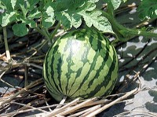

すいか（西瓜）の生産量 都道府県ランキング
全25県の順位と、とれた量
すいかが日本でいちばん多くとれるのは熊本県です。4万2,100 tで、全国（29万9,000 t）の14%を占めます。

| 順位 | 都道府県 | 収穫量 | 全国に占める割合 |
|---|---|---|---|
| 1位 | 熊本県 | 4万2,100 t | 14% |
| 2位 | 千葉県 | 3万7,100 t | 12% |
| 3位 | 山形県 | 2万9,600 t | 9.9% |
| 4位 | 鳥取県 | 1万8,900 t | 6.3% |
| 5位 | 北海道 | 1万8,500 t | 6.2% |
| 6位 | 新潟県 | 1万6,200 t | 5.4% |
| 7位 | 長野県 | 1万6,000 t | 5.4% |
| 8位 | 茨城県 | 1万5,800 t | 5.3% |
| 9位 | 愛知県 | 1万5,100 t | 5.1% |
| 10位 | 石川県 | 1万2,700 t | 4.2% |
| 11位 | 神奈川県 | 9,510 t | 3.2% |
| 12位 | 秋田県 | 8,600 t | 2.9% |
| 13位 | 長崎県 | 7,640 t | 2.6% |
| 14位 | 青森県 | 4,760 t | 1.6% |
| 15位 | 静岡県 | 4,180 t | 1.4% |
| 16位 | 大分県 | 4,130 t | 1.4% |
| 17位 | 兵庫県 | 3,220 t | 1.1% |
| 18位 | 福井県 | 3,010 t | 1.0% |
| 19位 | 愛媛県 | 2,740 t | 0.9% |
| 20位 | 福岡県 | 2,370 t | 0.8% |
| 21位 | 鹿児島県 | 2,080 t | 0.7% |
| 22位 | 和歌山県 | 1,810 t | 0.6% |
| 23位 | 奈良県 | 1,720 t | 0.6% |
| 24位 | 山口県 | 1,580 t | 0.5% |
| 25位 | 岡山県 | 710 t | 0.2% |
この数字について
- 分類：ウリ科
- 全国の収穫量：29万9,000 t
- この数字が表すもの：収穫量（畑や田でとれた重さ）
- 調査：作物統計調査 作況調査（野菜） 令和6年産
- くだものとして扱っていますが、統計では野菜として調べられています。
- 25県分を調査（調査していない県は順位に入りません）
すいかの生産量について、よくある質問
- すいかの生産量が日本一の都道府県はどこですか？
- 熊本県です。作物統計調査 作況調査（野菜）（令和6年産）で4万2,100 tでした。
- すいかの生産量ランキング2位・3位はどこですか？
- 2位は千葉県（3万7,100 t）、3位は山形県（2万9,600 t）です。
- すいかの生産量ランキング4位・5位はどこですか？
- 4位は鳥取県（1万8,900 t）、5位は北海道（1万8,500 t）です。すいかの全25県の順位は上の表のとおりです。
- すいかの全国の生産量はどれくらいですか？
- 29万9,000 t（令和6年産）です。